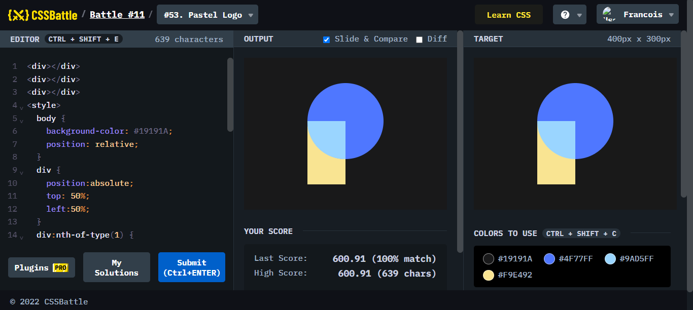
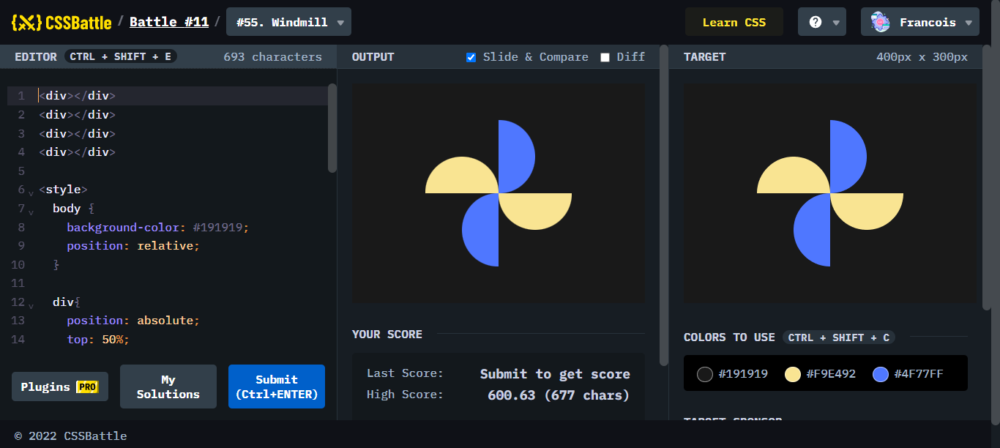
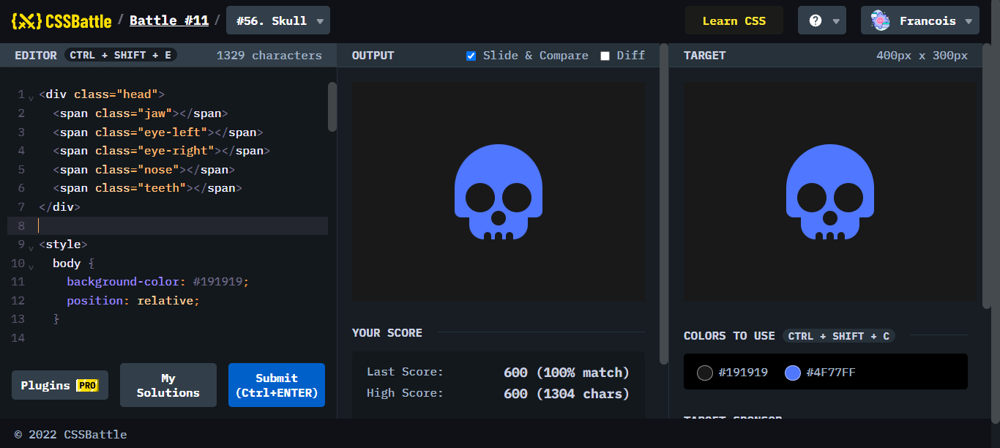
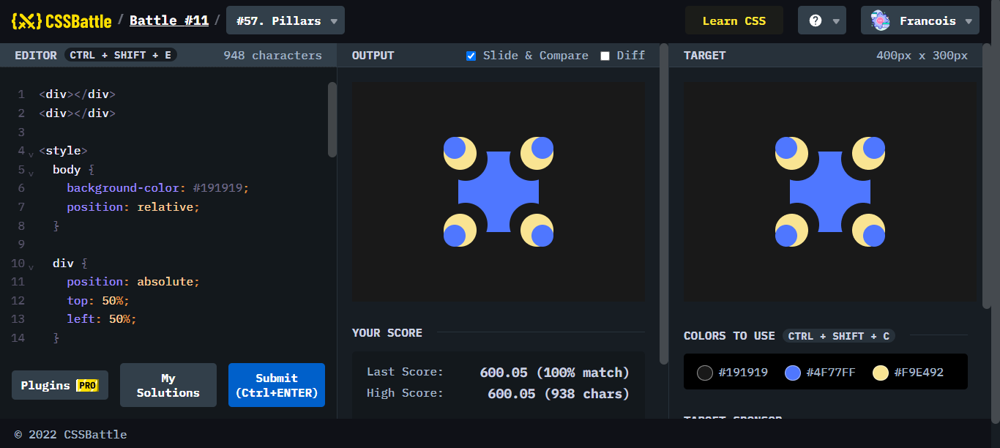
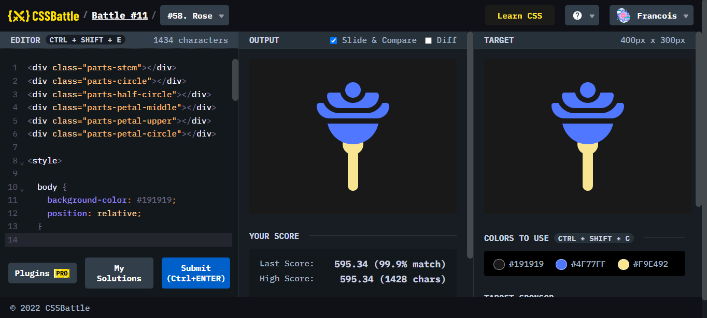
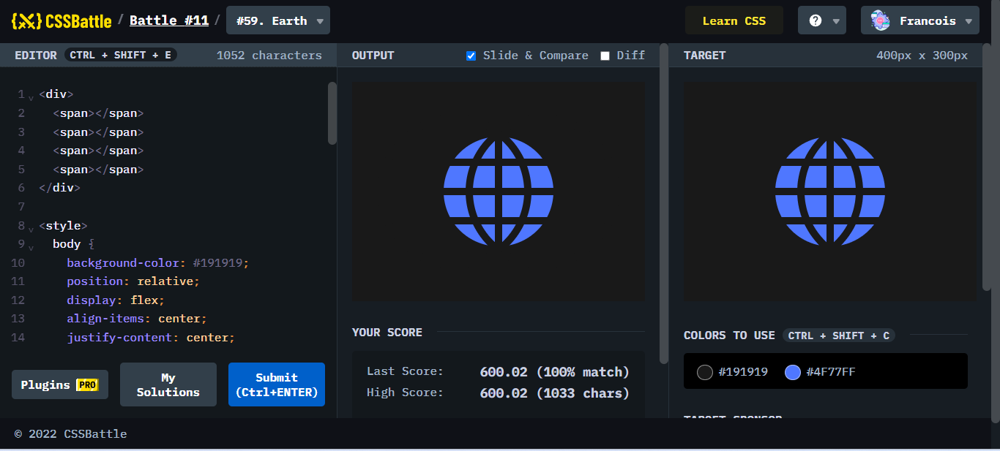
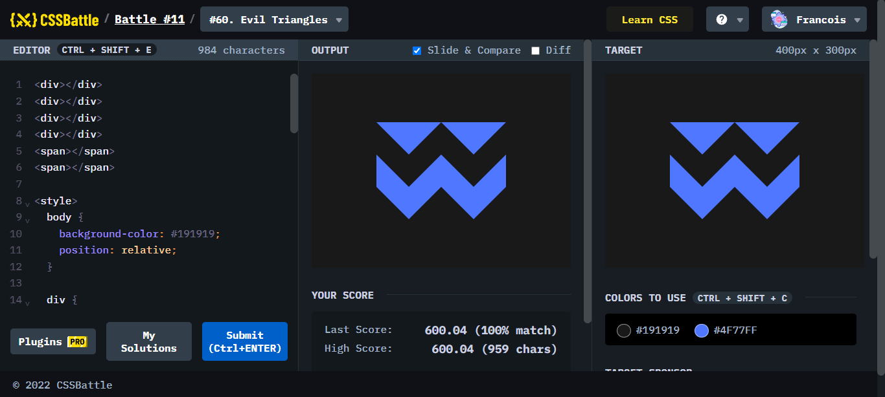

Battle #11 - Overflow
Battle.11では、8問が出題されていて、世界共通で使われるようなアイコンが増えているような気がします。どのような難易度かみてみましょう。
#53. Pastel Logo

ポイント
丸、扇形、長方形の3つを組み合わせて作ったロゴ。難易度低め。
#54. Black Lives Matter

ポイント
親指が傾いているかつ、シャドウがついているため、大きさや角度に少し戸惑った。
#55. Windmill

ポイント
半円を作ることができればひとつずつ作るとよいが工夫の余地がありそう。
#56. Skull

ポイント
微妙な1pxの違いのそろえ方が出てきて地味にめんどくさかった。
#57. Pillars

ポイント
ついに0.5pxを合わせる時がきてしまった。
#58. Rose

ポイント
花びらと茎をつなぐ部分を半円で作ろうとしてどうしても大きさが合わなかったため、円に花びらを重ねることで対応。
#59. Earth

ポイント
地球の曲線が、楕円でできているのか、正円のボーダーでできているのか分からずに時間がかかってしまった。#58、#59で4時間くらい溶けた。
#60 Evil Triangles

ポイント
borderの使い方と三角形のでき方を抑えるとできる。